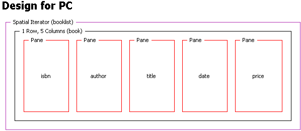

If you need to present sets of results from a dynamic data source, or a layout in which the content changes over time, you can use a format iterator.
Spatial iterators handle tables with both fixed and variable numbers of rows from a database query or a web search engine.
A temporal iterator allows you to create a time-based, sequences for use with the Message Preparation Sever (MPS).
A spatial iterator defines both rows and columns in a single format. You can specify either an exact number of iterations or an upper limit, and also define the order of indexing the generated panes - rows or columns first. A single pane defines the content.
Another use of iterators is to enclose regions, so that variable numbers of portlets or content sources can be combined in a single layout. The syntax for using a fixed region name outside a format iterator is identical to that for panes.
Inside an iterator, you can use the function expressions layout:getPaneInstance() or layout:getRegionInstance(), which take a string and a series of integer index values to refer to the instances of the panes or regions within the iterator.
<region
name="{layout:getRegionInstance('name', 0, 1, 2, 3)}">
...
<region>
The figure shows how a spatial iterator and its content appear in a Layout editor Design page. The grid contains a row of five panes. Named isbn, author, title, date and price, they act as column definitions for information about books.

The table illustrates the results that are output by the format iterator, and how the generated pane instances are identified in relation to the unique names in the layout definition. The name of the pane, for example, isbn, is combined with a sequential index number starting at zero for the first row.
| isbn.0 | author.0 | title.0 | date.0 | price.0 |
| isbn.1 | author.1 | title.1 | date.1 | price.1 |
| isbn.2 | author.2 | title.2 | date.2 | price.2 |
The XDIME example populates the layout with simple content using the expression function layout:getPaneInstance() to refer to the instances of the panes within the spatial iterator. This function returns a reference to one instance of a pane within an iterating format.
<!-- First book -->
<p pane="{layout:getPaneInstance('isbn',0)}">1-56592-622-6</p>
<p pane="{layout:getPaneInstance('author',0)}">Cascading style sheets</p>
<p pane="{layout:getPaneInstance(title,0)}">Eric A Mayer</p>
<p pane="{layout:getPaneInstance('date',0)}">2000</p>
<p pane="{layout:getPaneInstance('price',0)}">$34.95</p>
<!-- Second book -->
<p pane="{layout:getPaneInstance('isbn',1)}">0-7645-4336</p>
<p pane="{layout:getPaneInstance('author',1)}">Professional WebSphere 5.0 Applications</p>
<p pane="{layout:getPaneInstance(title,1)}">Tim Francis and others</p>
<p pane="{layout:getPaneInstance('date',1)}">2003</p>
<p pane="{layout:getPaneInstance('price',1)}">$79.99</p>
<!-- Third book -->
<p pane="{layout:getPaneInstance('isbn',2)}">0-07-882396-X</p>
<p pane="{layout:getPaneInstance('author',2)}">The XML handbook</p>
<p pane="{layout:getPaneInstance(title,2)}">Charles Goldfarb, Paul Prescod</p>
<p pane="{layout:getPaneInstance('date',2)}">2001</p>
<p pane="{layout:getPaneInstance('price',2)}">$49.99</p>
Temporal iterators work in a similar way to spatial iterators. The associated attributes define the transition between presentation of one set of content and the next.
In the preceding example the booklist index values 0-2 for the output pane instances could be associated with time intervals. This might not be effective in a text-only presentation, but it would make sense if the content was a series of book cover images.
This kind of indexing can also be used in MPS messages, to present information in a sequence of pages on devices with small displays.
Related topic
Canvas layouts and panes
layout:getPaneInstance
layout:getRegionInstance